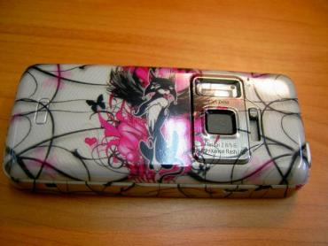

Mobbing - telefonų puošyba
Mobilusis telefonas jau seniai tapo įprastu dalyku mūsų gyvenime.Atsiranda žmonių, kurie mobilų telefoną nori turėti ne tik kaip ryšio priemonę, bet ir kaip prabangų aksesuarą, pabrėžiantį jų individualumą. Jei Jums pabodo standartinė telefono išvaizda ir norite, kad telefonas būtų Jūsų stiliaus dalimi, pats laikas užsiimti savo telefono mobbing'u.
Telefonų puošyba
Prieš pradėdami aiškintis būdus, išsiaiškinkim terminus. „Mod" arba „modify" , išvertus iš anglų kalbos, reiškia modifikavimą, gerinimą ar keitimą. Žinoma, žodis „modding" reiškia modifikuoti. Šis žodis labiau yra naudojamas apibūdinant kompiuterių išvaizdos ir techninių parametrų keitimą. Telefonų išvaizdos ar parametrų keitimas įgavo pavadinimą „mobbing", nuo žodžio „mobification". Kaip ir kompiuteriuose, taip ir telefonuose galima keisti išorę ir įvairius techninius parametrus.
Ši puošyba atsirado Japonijoje ir po to paplito po visą pasaulį. Garsiausia kompanija Azijoje užsiimanti telefonų įvyniojimu yra Gmask. Nuo lipdukų (skin‘ų), šis telefonų puošybos būdas skiriasi tuo, jog lipdukai klijuojami tik ant telefono priekio ir galo, o antra oda gali būti klijuojama ant viso telefono kampų, šonų, ekrano ir mygtukų.
Antra oda, tai ypatingai plona lipni plėvelė, kurios storis yra apie 0,05 milimetro, tačiau ji pakankamai stora, kad atlaikytų spausdinimą ir laminavimą. Atėję papuošti savo telefoną, jūs galite pasirinkti pageidaujamą paveiksliuką iš katalogo, arba atsinešti savo įrašytą į USB raktą. Vietoje bus paruošta permatoma plėvelė su jūsų paveiksliuku. Jei jūsų telefonas juodos spalvos, visų pirma bus klijuojama balta plėvelė fonui. Užklijavus foninę plėvelę, nereikalinga plėvelė nuo telefono šonų, mygtukų, kameros yra apipjaustoma ir pašalinama. Tada klijuojama permatoma antra oda su paveiksliuku. Vėlgi plėvelės likučiai yra apipjaustomi, tačiau dabar plėvelę galima palikti ant mygtukų, nes jį yra labai plona ir netrukdo mygtukų paspaudimui, dulkės daugiau nebesikaups tarpuose tarp mygtukų. Viso telefono apklijavimas užtrunka nuo 60 iki 90 minučių. Kai nusibosta telefono išvaizda, nuplėšiate plėvelę ir vėl jūsų telefonas toks koks ir buvo.
Su šia plėvelė Jūsų telefonas atrodys išskirtinis, pilnai apsaugotas nuo įbrėžimų, nes nuo šiol visi įbrėžimai liks ant antros odos, o ne ant korpuso. Telefonas taps atsparus drėgmei ir prakaitui. Mygtukų tarpuose nebesikaups dulkės ir nešvarumai.
Šio telefonų puošybos būdo pagrindinis trūkumas yra tai, jog šį procesą turi atlikti specialiai apmokytas žmogus, žinantis, kaip elgtis su aštriu peiliuku, todėl savo telefoną reikės bent valandai patikėti specialistui.
Ekstremalus mobbing'as
Žinoma ekstremaliausia, kai telefono savininkas pats su suvirinimo aparatu atlieka graviravimo darbus arba pamirko savo telefoną skardinėje su aukso spalvos dažais. Prie profesionalaus „keisto" mobbing'o priskirčiau visų pirma lipdinius, kai ant telefono prilipdomas papildomas plastikas ir suformuojama nauja telefono forma, po to ji apipavidalinama aerografu. Paminėti verta ir telefono tekstūros keitimą, apklijuojant jį kailiu, oda ar kita tekstiline medžiaga. Dar yra prestižinis mobbing'as kai plastikinės telefono korpuso detalės yra keičiamos natūraliu medžiu.
Šiame straipsnyje panaudotose foto matote 2oda.lt apipavidalintus telefonus. Norite pakeisti savo telefono išvaizdą - tuomet mielai visus kviečiu apsilankyti Kauno Urmo bazės (Pramonės pr.18, Kaunas) teritorijoje esančio “Traukinio” ketvirtame vagone, telefonų puošybos salone “Antra oda” ir išbandyti šią paslaugą. Arba užsukite į svetainę www.2oda.lt, kurioje rasite daug papuoštų telefonų nuotraukų. Nepamirškite, papuošti galima ne tik jūsų telefoną, tačiau ir USB raktą, MP3 grotuvą, foto kamerą ir kitą smulkią elektroniką.
El.paštas: info@2oda.lt
Skype: info.2oda
Mob.tel.: 861639600


{kind=link}
{kind=link}
{kind=link}
{kind=link}
{kind=link}
{kind=link}
{kind=link}
{kind=link}
{kind=link}
{kind=link}